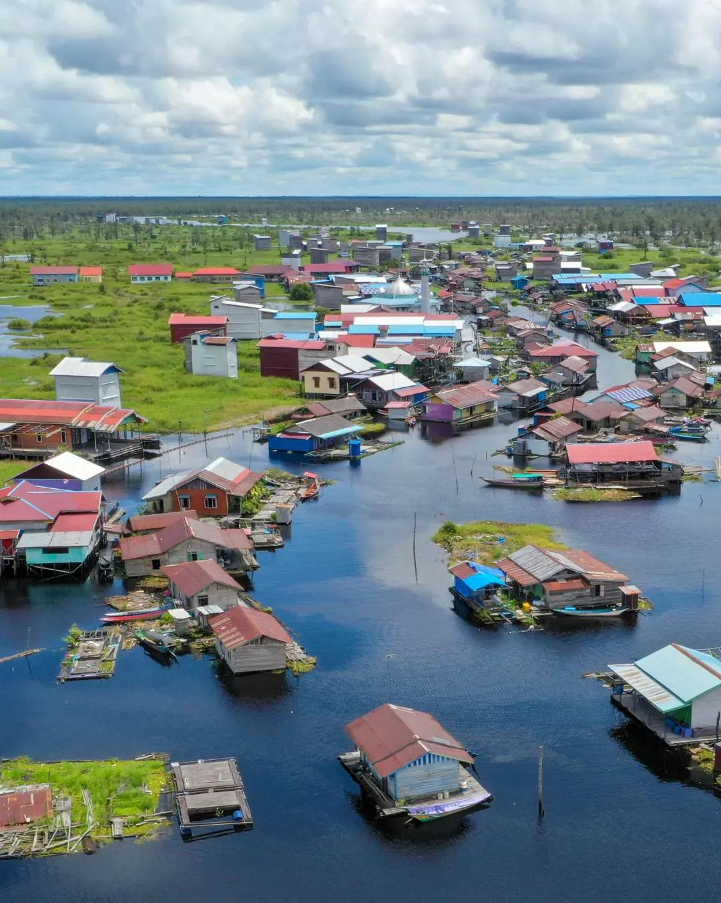

KAMUS DIGITAL BAHASA BANJAR
LANTING KATA
Belajar Bahasa Banjar Menjadi Lebih Mudah, Menyenangkan, dan Interaktif.
Mulai Belajar
TENTANG NAMA KAMI
Terinspirasi dari Rumah Lanting
Nama LANTING KATA terinspirasi dari rumah lanting, salah satu bentuk hunian masyarakat Banjar yang hidup berdampingan dengan sungai.
Rumah lanting mengajarkan kita bahwa budaya dapat terus hidup mengikuti perkembangan zaman. Begitu pula dengan Bahasa Banjar. Melalui LANTING KATA, bahasa daerah diperkenalkan dalam ruang digital yang dekat dengan generasi masa kini.